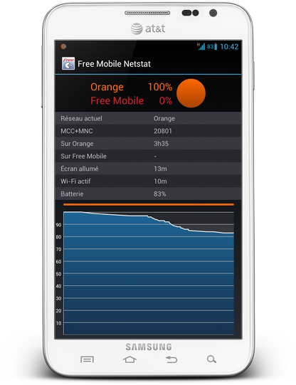
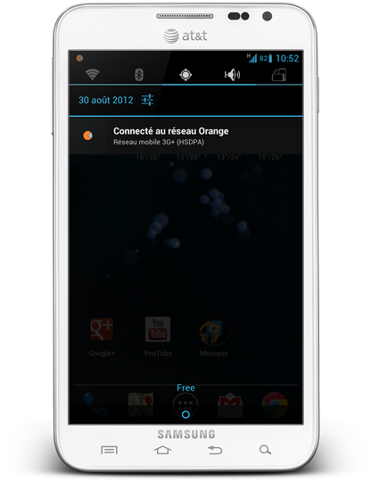

Ces statistiques sont basées sur les 7 derniers jours.
Participez à la collecte des données !
Ce site est alimenté par une application installée sur votre smartphone Android.
L'application Free Mobile Netstat surveille en tâche de fond l'opérateur réseau auquel votre téléphone est connecté. Dès que l'opérateur réseau change, une notification apparaît sur votre téléphone, avec un signal sonore (configurable).
L'utilisation de la batterie au cours de la journée est également enregistrée, afin que vous puissiez constater les conséquences de l'utilisation du réseau d'un opérateur sur votre batterie.
- 
- 
La collecte des données est totalement anonyme. Régulièrement, les statistiques d'utilisation du réseau de chaque opérateur sont envoyées sur ce site, qui compile l'ensemble des résultats pour les présenter graphiquement.
L'application supporte les versions Android 2.1 jusqu'à Android 4.0.
Téléchargez l'application sur le Google Play Store.
Ce site n'est pas lié à Free Mobile.